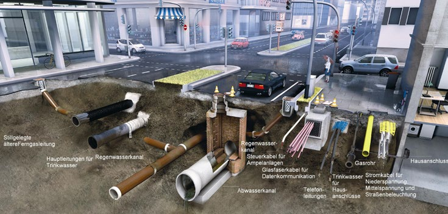

Erdverlegte Ver- und Entsorgungsleitungen (Kabel, Rohre, Kanäle etc.) sind sowohl in öffentlichen als auch in privaten Grundstücken verlegt. Die Verlegetiefe dieser Leitungen ist sehr unterschiedlich. Die Soll-Tiefe stimmt häufig nicht mit der Ist-Tiefe überein, weshalb die Leitungen manchmal nur wenige Zentimeter unter der Geländeoberfläche liegen. Oft ist ihre Lage nur ungefähr aufgezeichnet, manchmal auch unbekannt.
Bei Bauarbeiten im Erdreich stellen diese Leitungen nicht nur Hindernisse und Erschwernisse dar, sondern können, vor allem bei unvermutetem Antreffen oder unsachgemäßem Vorgehen, sogar zur Gefahr für die Beschäftigten und die nähere Umgebung werden.
Es liegt daher im gemeinsamen Interesse von Bauherren, Betreibern und Auftragnehmern, vor und während der Durchführung von Erdarbeiten größte Sorgfalt walten zu lassen, um Schäden und Unfälle zu vermeiden.
Tabelle 1 Netzlängen von erdverlegten Ver- und Entsorgungsleitungen in Deutschland (Übersicht)
| Leitungsart | Netzlänge in km |
| Elektro | ca. 1 000 000 |
| Gas | 290 000 |
| Wasser | 500 000 |
| Kommunikationskabel | 2 550 000 |
| Abwasser | 1 260 000 |
| Fernleitungen, andere Produktleitungen | ca. 35 000 |
| Gesamte Leitungslänge | ca. 5 650 000 |
Durch mangelhafte Vorbereitung und unsachgemäße Durchführung von Erdarbeiten kommt es häufig zu Beschädigungen von Leitungen und dadurch auch zu Gefährdungen von Personen.
Die meisten Unfälle mit Personenschäden ereignen sich bei Arbeiten an oder in der Nähe von Elektro- und Gasleitungen.
Jedes Jahr werden den Sachversicherungen ca. 100 000 Schadensfälle gemeldet, für die Entschädigungen in Höhe von rund 500 Mio. Euro geleistet werden müssen. Fachleute gehen allerdings von wesentlich mehr Schadensfällen und damit noch höheren Kosten aus.
Über die häufig mit Sachschäden einhergehenden Personenschäden gibt es keine verlässlichen Angaben, da sie, sofern es sich um Arbeitsunfälle handelt, von den Unfallversicherungsträgern statistisch nicht gesondert erfasst werden.
Etwa 80 % der Schäden an Leitungen sind auf Arbeiten mit Baumaschinen zurückzuführen, z. B. Bagger-, Bohr-, Ramm-, Schürf- und Vortriebsarbeiten.
Jede Beschädigung, auch scheinbar geringfügige wie z. B. eine angekratzte Isolierung, hat der Verursacher dem Betreiber sofort zu melden, weil gerade die nicht behobenen kleinen Beschädigungen erhebliche Folgeschäden nach sich ziehen können.
